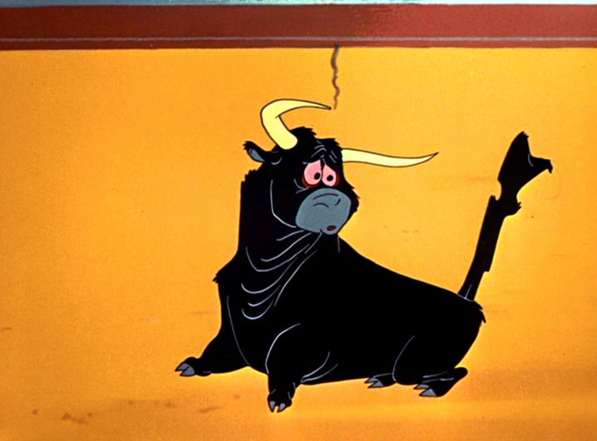

Goals
- Combining two STLs
- Starting on the lamp
Combining two STLs
I really enjoyed the process of fusing the two STLs, even though I had to switch my ideas a few times. My original idea was to fuse a bull and a gun to create the bull from the Bugs Bunny matador episode, but finding a simplistic rifle file was very difficult. I realized that I needed to find a shotgun model, but the ones online were two realistic and I couldn't find a mesh that wasn't riddled with problems. I used FillMeshHoles, reduced the size, worked on the control points, MeshRepair, and many other attempts. I just couldn't find a way to make it work, and even when I put the two shapes together to see how it could eventually turn out, it looked weird.
If I try to create the bull again, I'm probably just going to draw most of it from scratch. The bulls online don't have even remotely similar faces to the cartoon, and the gun in the picture doesn't fit in with any of the gun files I found online.
Is it cute or cursed?
I decided to shift focus to making a fused Animal Crossing villager for my friend. She loves Pokémon, especially Lickitung, and became addicted to Animal Crossing during our quarantine back home in Virginia.
I found a file for a villager on Cults3D and the Lickitung on Thangs.com and cut the top half off the villager. The hardest part was definitely transitioning Lickitung's round body onto the fairly thin lower half, but between floating different sized circles for a sloped cylinder, remeshing, and smoothing, I got it to work.
I printed it out after I finished, and I'm going to paint it and send it to her for Christmas. I'm not sure if it's cute or cursed, but we'll see what she thinks.
Here are the sources for the Lickitung model and the Animal Crossing Figure I used for the bottom half.
Starting on the lamp
I've always loved lighting design. My first purchase after getting a job as an engineer was to outfit my apartment with Philips Hue colored lights and hook them up to my Google Home. I still come home every night saying, "Hey Google, turn on the lights." Even my Christmas tree is hooked up with a 3rd party smart plug.
My first step was modeling my lightbulb with it in the socket. I wanted to be able to carry my light around with me to the makerspaces, art suppliers and hardware stores, but I was worried about breaking it.
I measured my bulb with my calipers, made a model, and printed it. It's not an exact replica in the curves and cones, but it fits my needs for being a good size estimate to carry around without worry.
Inspiration
I love cartoons and movies, and wanted to draw from them for inspiration. Here are the different photos I've been using to sketch out solutions:
Disintegration Ray
I decided that I wanted to make a shade that's inspired by this frame from Duck Dodgers.

I think that the shape would be really interesting flipped on its face, with the shape looking like a warped disk.
I've been printing squares of white and translucent PLA to test transparencies, but the most promising idea looks like staining acrylic sheets with a mixture of Modge Podge and food coloring. I'd like to use different shades of yellow, mixing with alternate blends of the glue, and white PLA sheets for the true white pieces of the design. I'm picking up acrylic sheets on Wednesday, will be laser cutting them to fit my sketches, and then use snap joints and screws to fasten the lamp together.
I picked an LED bulb that gives off very little heat and have measured the portion that will be inside the shade to be about 60mm, so I'm planning on the shade being approximately 80 to 90mm tall and 200mm wide. If I end up loving the lamp, I'm planning on expanding the width to create a full-size version to hang in my next apartment, hopefully over a dinner table.